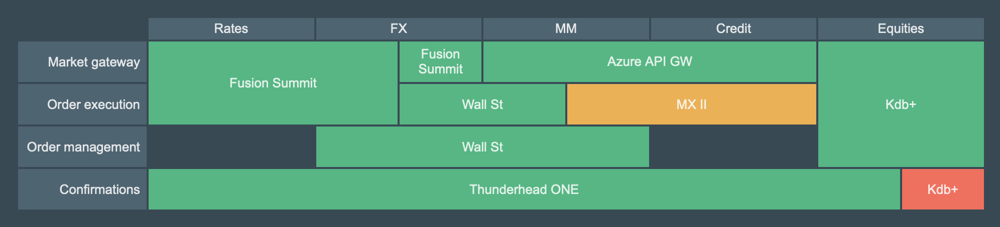

Landscape map visualisation
For many years as an Enterprise Architect I have been drawing landscape maps in Visio to communicate the health of a domain's application portfolio. While they are a valuable communication tool, these diagrams are time-consuming, complex to draw and ever-changing. The landscape map visualisation tool at its simplest renders a table, splitting and joining table cells as needed, but also provides functionallity to optimise the axes ordering for maximum joined cells. These diagrams conform to the Archimate Landscape Map Viewpoint.
|  |
Landscape maps are a technique for visualizing enterprise architectures. They present architectural elements in the form of an easy to understand 2D map. A landscape map view on architectures provides non-technical stakeholders with a high-level overview, without burdening them with technicalities of architectural drawings.
For a more in-depth example, including a time-dimension, see the landscape map visualisation page.